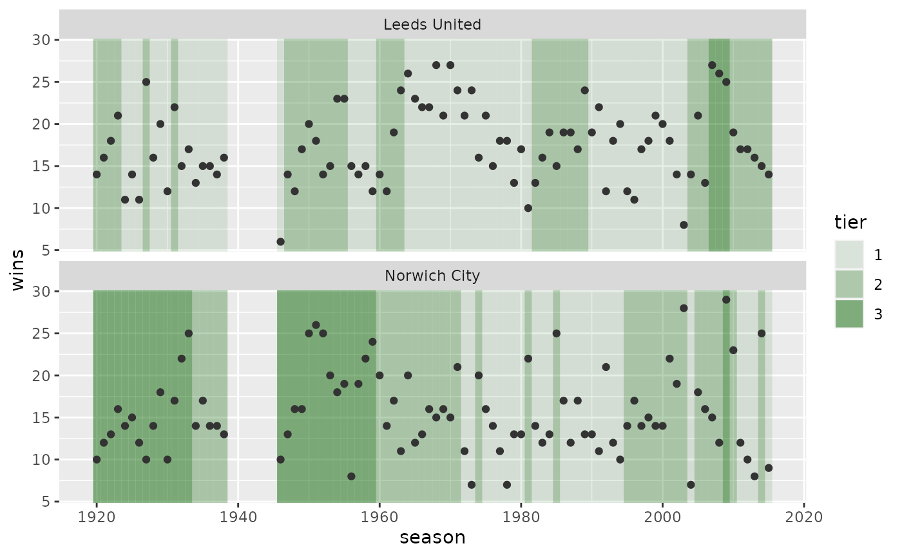
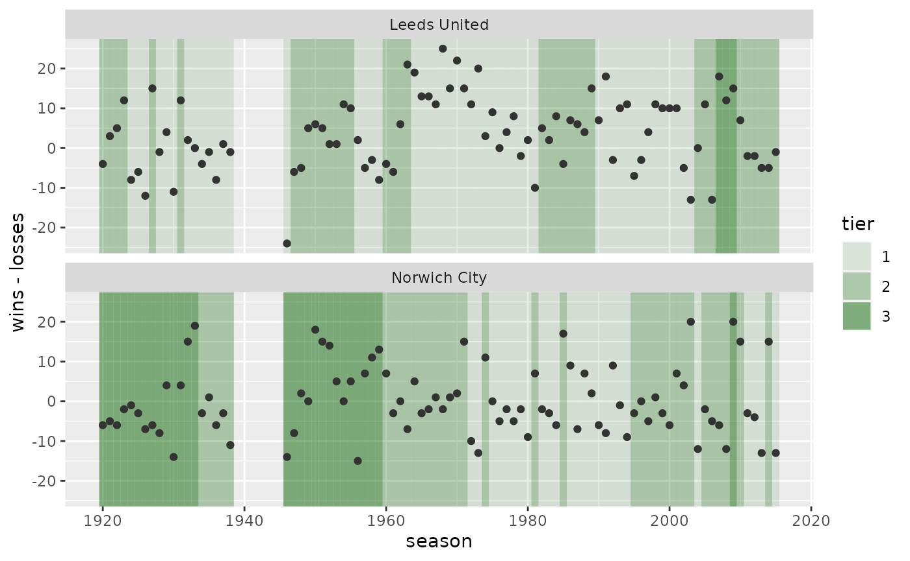

The ussie pckage is designed as a teaching example for a course, Building Tidy Tools. In this course, a student will build this package. For each file, they will start with templated functions; they will edit the file themselves, according to the particular exercise.
When a student has a function working the way they want it to work, they will add an exampe in this vignette. What follows is Ian’s attempt to go through the exercise.
library(ussie)
library(dplyr)
#>
#> Attaching package: 'dplyr'
#> The following objects are masked from 'package:stats':
#>
#> filter, lag
#> The following objects are masked from 'package:base':
#>
#> intersect, setdiff, setequal, union
conflicted::conflict_prefer("filter", "dplyr")
#> [conflicted] Will prefer dplyr::filter over any other packageYou can use the ussie package to work with data for league-play matches for European Football Leagues. The data is provided by James Curley’s engsoccerdata package: the CRAN version has results through summer 2016; the GitHub version has more-recent results.
Get match results
To find out which leagues are available, use uss_countries():
uss_countries()
#> [1] "england" "germany" "holland" "italy" "spain"To get the data for a given league, use uss_get_matches() with the country:
uss_get_matches("england")
#> # A tibble: 192,004 × 8
#> country tier season date home visitor goals_home goals_visitor
#> <chr> <fct> <int> <date> <chr> <chr> <int> <int>
#> 1 England 1 1888 1888-12-15 Accrington … Aston … 1 1
#> 2 England 1 1888 1889-01-19 Accrington … Blackb… 0 2
#> 3 England 1 1888 1889-03-23 Accrington … Bolton… 2 3
#> 4 England 1 1888 1888-12-01 Accrington … Burnley 5 1
#> 5 England 1 1888 1888-10-13 Accrington … Derby … 6 2
#> 6 England 1 1888 1888-12-29 Accrington … Everton 3 1
#> 7 England 1 1888 1889-01-26 Accrington … Notts … 1 2
#> 8 England 1 1888 1888-10-20 Accrington … Presto… 0 0
#> 9 England 1 1888 1889-04-20 Accrington … Stoke … 2 0
#> 10 England 1 1888 1888-11-24 Accrington … West B… 2 1
#> # … with 191,994 more rowsuss_get_matches() also accepts ... arguments; these are passed to dplyr::filter():
uss_get_matches(
"england",
season == 1990,
home == "Leeds United" | visitor == "Leeds United"
)
#> # A tibble: 38 × 8
#> country tier season date home visitor goals_home goals_visitor
#> <chr> <fct> <int> <date> <chr> <chr> <int> <int>
#> 1 England 1 1990 1991-03-17 Arsenal Leeds … 2 0
#> 2 England 1 1990 1990-10-27 Aston Villa Leeds … 0 0
#> 3 England 1 1990 1991-03-30 Chelsea Leeds … 1 2
#> 4 England 1 1990 1990-11-24 Coventry Ci… Leeds … 1 1
#> 5 England 1 1990 1990-10-06 Crystal Pal… Leeds … 1 1
#> 6 England 1 1990 1991-04-23 Derby County Leeds … 0 1
#> 7 England 1 1990 1990-08-25 Everton Leeds … 2 3
#> 8 England 1 1990 1990-09-29 Leeds United Arsenal 2 2
#> 9 England 1 1990 1991-05-04 Leeds United Aston … 5 2
#> 10 England 1 1990 1990-12-26 Leeds United Chelsea 4 1
#> # … with 28 more rowsGet match results for teams
In a matches tibble, each row is a unique football match. To make calculations over the course of a team’s season, it may be useful to provide an additional form: a teams_matches tibble. In this form, each row is a match from the perpsective of one of its teams. Thus, each match can be represented by two rows, one for each team.
We can get teams_matches tibble using uss_make_teams_matches():
england_1_1990 <-
uss_get_matches("england", tier == 1, season == 1990) |>
uss_make_teams_matches()
england_1_1990
#> # A tibble: 760 × 9
#> country tier season team date at_home opponent goals_for
#> <chr> <fct> <int> <chr> <date> <lgl> <chr> <int>
#> 1 England 1 1990 Arsenal 1990-08-25 FALSE Wimbledon 3
#> 2 England 1 1990 Arsenal 1990-08-29 TRUE Luton Town 2
#> 3 England 1 1990 Arsenal 1990-09-01 TRUE Tottenham Hotspur 0
#> 4 England 1 1990 Arsenal 1990-09-08 FALSE Everton 1
#> 5 England 1 1990 Arsenal 1990-09-15 TRUE Chelsea 4
#> 6 England 1 1990 Arsenal 1990-09-22 FALSE Nottingham Forest 2
#> 7 England 1 1990 Arsenal 1990-09-29 FALSE Leeds United 2
#> 8 England 1 1990 Arsenal 1990-10-06 TRUE Norwich City 2
#> 9 England 1 1990 Arsenal 1990-10-20 FALSE Manchester United 1
#> 10 England 1 1990 Arsenal 1990-10-27 TRUE Sunderland 1
#> # … with 750 more rows, and 1 more variable: goals_against <int>If we look at a specific date:
england_1_1990 |>
filter(date == as.Date("1990-09-29"))
#> # A tibble: 20 × 9
#> country tier season team date at_home opponent goals_for
#> <chr> <fct> <int> <chr> <date> <lgl> <chr> <int>
#> 1 England 1 1990 Arsenal 1990-09-29 FALSE Leeds U… 2
#> 2 England 1 1990 Aston Villa 1990-09-29 FALSE Tottenh… 1
#> 3 England 1 1990 Chelsea 1990-09-29 TRUE Sheffie… 2
#> 4 England 1 1990 Coventry City 1990-09-29 TRUE Queens … 3
#> 5 England 1 1990 Crystal Palace 1990-09-29 FALSE Derby C… 2
#> 6 England 1 1990 Derby County 1990-09-29 TRUE Crystal… 0
#> 7 England 1 1990 Everton 1990-09-29 TRUE Southam… 3
#> 8 England 1 1990 Leeds United 1990-09-29 TRUE Arsenal 2
#> 9 England 1 1990 Liverpool 1990-09-29 FALSE Sunderl… 1
#> 10 England 1 1990 Luton Town 1990-09-29 FALSE Norwich… 3
#> 11 England 1 1990 Manchester City 1990-09-29 FALSE Wimbled… 1
#> 12 England 1 1990 Manchester United 1990-09-29 TRUE Notting… 0
#> 13 England 1 1990 Norwich City 1990-09-29 TRUE Luton T… 1
#> 14 England 1 1990 Nottingham Forest 1990-09-29 FALSE Manches… 1
#> 15 England 1 1990 Queens Park Range… 1990-09-29 FALSE Coventr… 1
#> 16 England 1 1990 Sheffield United 1990-09-29 FALSE Chelsea 2
#> 17 England 1 1990 Southampton 1990-09-29 FALSE Everton 0
#> 18 England 1 1990 Sunderland 1990-09-29 TRUE Liverpo… 0
#> 19 England 1 1990 Tottenham Hotspur 1990-09-29 TRUE Aston V… 2
#> 20 England 1 1990 Wimbledon 1990-09-29 TRUE Manches… 1
#> # … with 1 more variable: goals_against <int>You can see that each match is represented twice: once for the home team and once for the visiting team.
Get season results
We have another form: a seasons tibble. These contain results accumulated over seasons. We have a couple of functions, each takes a teams_matches data frame:
-
uss_make_seasons_cumulative(): returns cumulative results following every team’s matches. -
uss_make_seasons_final(): returns results at the end of each team’s seasons.
For each of these functions, the columns returned are the same: matches, wins, losses, etc:
england_1_1990 |>
uss_make_seasons_cumulative() |>
arrange(team, date)
#> # A tibble: 760 × 12
#> # Groups: country, tier, season, team [20]
#> country tier season team date matches wins draws losses points
#> <chr> <fct> <int> <chr> <date> <int> <int> <int> <int> <int>
#> 1 England 1 1990 Arsenal 1990-08-25 1 1 0 0 3
#> 2 England 1 1990 Arsenal 1990-08-29 2 2 0 0 6
#> 3 England 1 1990 Arsenal 1990-09-01 3 2 1 0 7
#> 4 England 1 1990 Arsenal 1990-09-08 4 2 2 0 8
#> 5 England 1 1990 Arsenal 1990-09-15 5 3 2 0 11
#> 6 England 1 1990 Arsenal 1990-09-22 6 4 2 0 14
#> 7 England 1 1990 Arsenal 1990-09-29 7 4 3 0 15
#> 8 England 1 1990 Arsenal 1990-10-06 8 5 3 0 18
#> 9 England 1 1990 Arsenal 1990-10-20 9 6 3 0 21
#> 10 England 1 1990 Arsenal 1990-10-27 10 7 3 0 24
#> # … with 750 more rows, and 2 more variables: goals_for <int>,
#> # goals_against <int>
england_1_1990 |>
uss_make_seasons_final() |>
arrange(desc(points))
#> # A tibble: 20 × 12
#> # Groups: country, tier, season [1]
#> country tier season team date matches wins draws losses points
#> <chr> <fct> <int> <chr> <date> <int> <int> <int> <int> <int>
#> 1 England 1 1990 Arsenal 1991-05-11 38 24 13 1 85
#> 2 England 1 1990 Liverpool 1991-05-11 38 23 7 8 76
#> 3 England 1 1990 Crystal Pa… 1991-05-11 38 20 9 9 69
#> 4 England 1 1990 Leeds Unit… 1991-05-11 38 19 7 12 64
#> 5 England 1 1990 Manchester… 1991-05-11 38 17 11 10 62
#> 6 England 1 1990 Manchester… 1991-05-20 38 16 12 10 60
#> 7 England 1 1990 Wimbledon 1991-05-11 38 14 14 10 56
#> 8 England 1 1990 Nottingham… 1991-05-11 38 14 12 12 54
#> 9 England 1 1990 Everton 1991-05-11 38 13 12 13 51
#> 10 England 1 1990 Chelsea 1991-05-11 38 13 10 15 49
#> 11 England 1 1990 Tottenham … 1991-05-20 38 11 16 11 49
#> 12 England 1 1990 Queens Par… 1991-05-11 38 12 10 16 46
#> 13 England 1 1990 Sheffield … 1991-05-11 38 13 7 18 46
#> 14 England 1 1990 Norwich Ci… 1991-05-11 38 13 6 19 45
#> 15 England 1 1990 Southampton 1991-05-11 38 12 9 17 45
#> 16 England 1 1990 Coventry C… 1991-05-11 38 11 11 16 44
#> 17 England 1 1990 Aston Villa 1991-05-11 38 9 14 15 41
#> 18 England 1 1990 Luton Town 1991-05-11 38 10 7 21 37
#> 19 England 1 1990 Sunderland 1991-05-11 38 8 10 20 34
#> 20 England 1 1990 Derby Coun… 1991-05-11 38 5 9 24 24
#> # … with 2 more variables: goals_for <int>, goals_against <int>You can call these functions has an optional argument to specify points-per-win. This argument, fn_points_per_win is meant to be a function, when called with arguments country and season, returns the number of points for a win that season. A default, uss_points_per_win(), is provided:
uss_points_per_win("england", 1980)
#> [1] 2Any function you provide must be vectorised over country and season:
uss_points_per_win(c("england", "england"), c(1980, 1981))
#> [1] 2 3If you just want to specify a constant two or three points per season, you can provide an anonymous function. If you are using R > 4.1.0, you can use the new syntax:
p <- \(...) 3 # use dots to allow unspecified arguments to pass
p("england", 1066)
#> [1] 3Plot results over seasons
Of the countries included in uss_countries(), only "england" has data for more than one tier, where we can see the effects of relegation and promotion. You can use uss_plot_seasons_tiers() to look at performance over seasons, using data returned from uss_make_seasons_final():
leeds_norwich <-
uss_get_matches("england") |>
uss_make_teams_matches() |>
filter(team %in% c("Leeds United", "Norwich City")) |>
uss_make_seasons_final() |>
arrange(team, season)
leeds_norwich
#> # A tibble: 178 × 12
#> # Groups: country, tier, season [155]
#> country tier season team date matches wins draws losses points
#> <chr> <fct> <int> <chr> <date> <int> <int> <int> <int> <int>
#> 1 England 2 1920 Leeds Unit… 1921-05-07 42 14 10 18 38
#> 2 England 2 1921 Leeds Unit… 1922-05-06 42 16 13 13 45
#> 3 England 2 1922 Leeds Unit… 1923-05-05 42 18 11 13 47
#> 4 England 2 1923 Leeds Unit… 1924-05-03 42 21 12 9 54
#> 5 England 1 1924 Leeds Unit… 1925-05-02 42 11 12 19 34
#> 6 England 1 1925 Leeds Unit… 1926-05-01 42 14 8 20 36
#> 7 England 1 1926 Leeds Unit… 1927-05-07 42 11 8 23 30
#> 8 England 2 1927 Leeds Unit… 1928-05-05 42 25 7 10 57
#> 9 England 1 1928 Leeds Unit… 1929-05-04 42 16 9 17 41
#> 10 England 1 1929 Leeds Unit… 1930-05-03 42 20 6 16 46
#> # … with 168 more rows, and 2 more variables: goals_for <int>,
#> # goals_against <int>The default is to show the wins on the y-axis:
uss_plot_seasons_tiers(leeds_norwich)
You can provide an argument, aes_y, where you can supply an expression just as you would for ggplot2:
uss_plot_seasons_tiers(leeds_norwich, aes_y = wins - losses)
Add results
We use the vctrs package to help build a function, uss_result() that creates an S3 vector to display results:
uss_get_matches("italy") |>
uss_make_teams_matches() |>
mutate(
result = uss_result(goals_for, goals_against),
.after = opponent
)
#> # A tibble: 50,808 × 10
#> country tier season team date at_home opponent result goals_for
#> <chr> <fct> <int> <chr> <date> <lgl> <chr> <uss_> <int>
#> 1 Italy 1 1929 AC Milan 1929-10-06 TRUE Brescia Ca… W 4-1 4
#> 2 Italy 1 1929 AC Milan 1929-10-13 TRUE Modena FC W 1-0 1
#> 3 Italy 1 1929 AC Milan 1929-10-20 FALSE SSC Napoli L 1-2 1
#> 4 Italy 1 1929 AC Milan 1929-10-27 TRUE AS Roma W 3-1 3
#> 5 Italy 1 1929 AC Milan 1929-11-03 FALSE Bologna FC D 1-1 1
#> 6 Italy 1 1929 AC Milan 1929-11-10 TRUE Inter L 1-2 1
#> 7 Italy 1 1929 AC Milan 1929-11-17 FALSE US Livorno L 1-4 1
#> 8 Italy 1 1929 AC Milan 1929-11-24 TRUE Lazio Roma W 2-1 2
#> 9 Italy 1 1929 AC Milan 1929-12-08 FALSE Juventus L 1-3 1
#> 10 Italy 1 1929 AC Milan 1929-12-15 TRUE US Cremone… W 5-2 5
#> # … with 50,798 more rows, and 1 more variable: goals_against <int>At this point, the only method defined for uss_result() is format(). The function is vectorised; the arguments must be the same length:
uss_result(c(1, 2, 3), c(2, 2, 2))
#> <ussie_result[3]>
#> [1] L 1-2 D 2-2 W 3-2